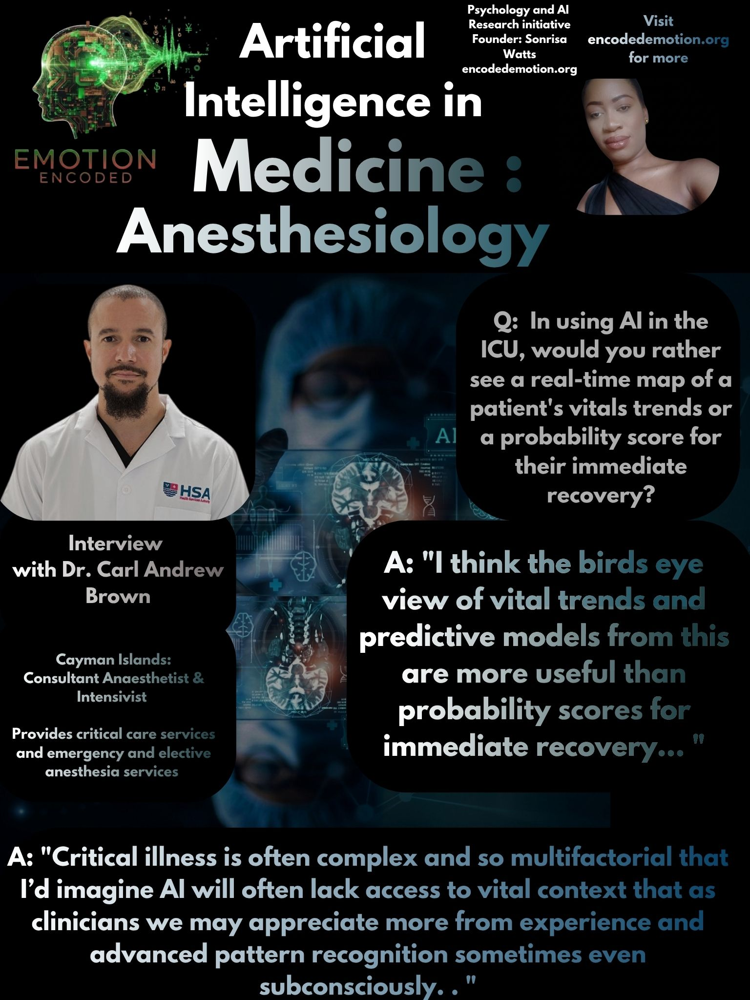

In the high-acuity settings of the operating theatre and the intensive care unit, where split-second clinical decisions are the norm, the role of artificial intelligence is evolving. Dr. Carl Andrew Brown, a Consultant Anaesthetist and Intensivist based at the Anthony S. Eden Hospital, shares his perspective on how digital intelligence integrates with his specialized practice in neuro, trauma, and transplant anesthesia.
I asked Dr. Brown if he is using AI tools like ChatGPT, Claude, or Gemini for his work right now.
"I do frequently use medical AI applications to rapidly access and review guidelines, drug dosages and current evidence. Typically only as a cursory look until I have the time to search formally for myself. I do sometimes input management plans and presenting pathophysiology to compare my own treatment approaches to AI generated plans also."
I asked Dr. Brown if, in using AI in the ICU, he would rather see a real-time map of a patient's vitals trends or a probability score for their immediate recovery.
"I think the Birds Eye view of vital trends and predictive models from this are more useful than probability scores for immediate recovery. Critical illness is often complex and so multifactorial that I’d imagine AI will often lack access to vital context that as clinicians we may appreciate more from experience and advanced pattern recognition sometimes even subconsciously."
I asked Dr. Brown if, in using AI in the operating theatre, he would rather have an alert for a potential crash or an AI that suggests his drug and ventilator settings.
"Honestly for the OR I’d rather have neither. I’m much more comfortable with taking on both of those roles myself but if I’d have to choose I’d say a composite of warning signs for potential acute deterioration could serve as a useful light on the dash so to speak."
I asked Dr. Brown if he thinks there might possibly be an over-reliance on AI in his field, or if he is not worried about that.
"I think there are 3 classes of doctors (and people in general) using AI today. The first group overly outsources cognitive load relying on AI heavily for day to day tasks leaving them more vulnerable to potential failures (for example hallucinations or recommendations without sufficient context). The other extreme out of caution avoids it entirely missing out on some of the opportunities it provides to rapidly learn and improve efficiency in the field. The final group carefully curates inputs to maximize the quality of the outputs and filters output through real world clinical experience, still engaging in critical thinking and scrutiny to provide a working product that I think is superior to both of the previous mentioned groups. I do believe this is the way forward for use of AI in the field."
RESEARCH VERDICT
The anaesthetist and intensivist views AI as a secondary assistant—a tool for rapid information retrieval and subtle monitoring, but never the pilot. Dr. Brown’s perspective suggests that the future of the field lies in the "curated clinician," a professional who rigorously tests AI insights against real-world experience, ensuring that clinical judgment remains the ultimate authority in the high-stakes environment of the ICU.
Sonrisa Watts // Emotion Encoded // 2026